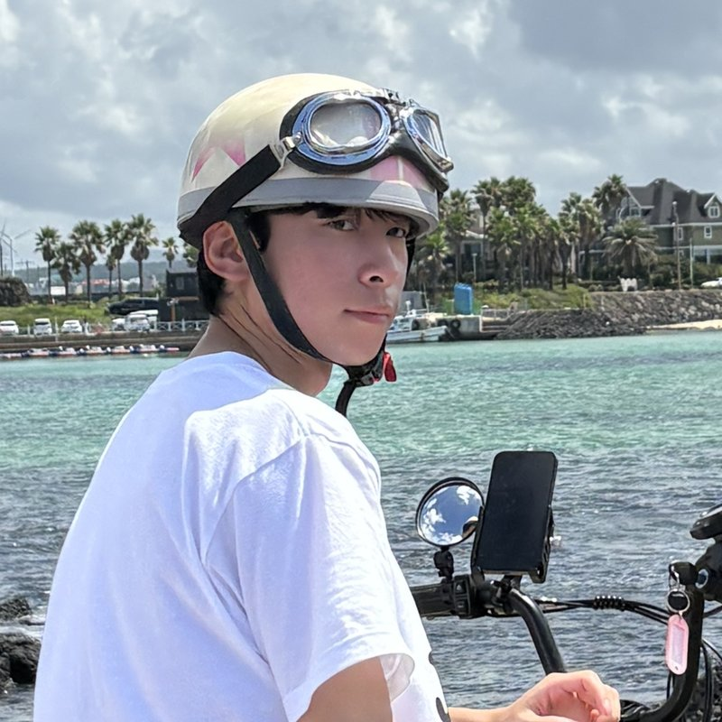

Kihyeon Joo
Robotics · HRI · Ethical AI · BCI
I am a Ph.D. student in Electrical and Computer Engineering at Inha University in Incheon, South Korea, where I am a member of the Affective Artificial Intelligence Lab.
My research aims to build robots that understand people. I work on robot manipulation that reasons about visual context and learns from human preferences, on interaction that keeps people collaborating with robots over time, on educational robots that support children's moral development, and on brain-computer interfaces that make EEG models practical with few channels and little calibration.
I received my B.S. in Information and Communication Engineering from Inha University.

Research
Robotics
Robot manipulation that reasons about visual context and adapts to what people prefer.
- Visual Contextual Reasoning Framework
- Human Preference Learning for Robotic Manipulation
Human-Robot Interaction
How a robot's way of speaking shapes ongoing collaboration, and whether people choose to work with it again.
- Speaking Style for Continuous Collaboration and Reselection
Ethical AI
Educational robots that help children grow as moral reasoners.
- ROBI: An Educational Robot for Children's Moral Development
Brain-Computer Interface
Making EEG-based models practical for real users, with fewer electrodes and less calibration.
- Few-Channel EEG Augmentation
- Calibration-Aware Fine-Tuning for EEG Foundation Model